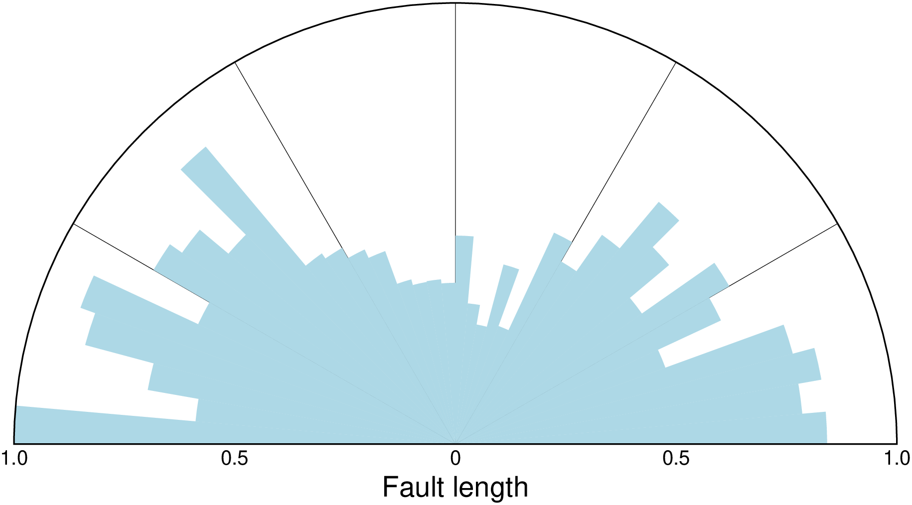
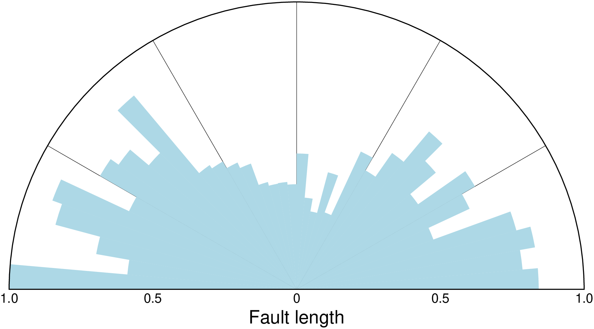

using GMT
rose("@azimuth_lengths.txt", yx=true, sectors=5, no_scale=true, labels=true,
fill=:lightblue, region=(0,1,0,180), xaxis=(annot=true, ticks=true, label="Fault length"),
yaxis=(grid=30,), norm=true, show=true)
Plot a polar histogram (rose, sector, windrose diagrams)
Reads (length, azimuth) pairs from matrix or file and plot a windrose diagram. Add incols=0 if your data only has azimuth values. Optionally (with sector), polar histograms may be drawn (sector diagram or rose diagram). Options include full circle and half circle plots. The outline of the windrose is drawn with the same color as MAP_DEFAULT_PEN.
A or sector or sectors : – sector=width | sector=“width+r”
Gives the sector width in degrees for sector and rose diagram. [Default 0 means windrose diagram]. Append +r (an forcedly give argument as a string) to draw rose diagram instead of sector diagram.
B or axes or frame
Set map boundary frame and axes attributes. Default is to draw and annotate left, bottom and vertical axes and just draw left and top axes. More at [frame](../common_opts/opt_B.html)
Remember that “x” here is radial distance and “y” is azimuth. The ylabel may be used to plot a figure caption. The scale bar length is determined by the radial gridline spacing.
C or color or cmap : – color=cpt
Give a CPT or specify color=“color1,color2 [,color3 ,…]” or color=((r1,g1,b1),(r2,g2,b2),…) to build a linear continuous CPT from those colors automatically. The r-value for each sector is used to look-up the sector color. Cannot be used with a rose diagram.
D or shift : – shift=true
Shift sectors so that they are centered on the bin interval (e.g., first sector is centered on 0 degrees).
E or vectors : – vectors=:m | vectors=mode_file | vectors=“+wmode_file”
Plot vectors showing the principal directions given in the mode_file file (a file name or else a matrix). Alternatively, specify vectors=:m to compute and plot mean direction. See vector_params to control the vector attributes. Finally, to instead save the computed mean direction and other statistics, use vectors=“[m]+wmode_file”. The eight items saved to a single record are: mean_az, mean_r, mean_resultant, max_r, scaled_mean_r, length_sum, n, sign@alpha, where the last term is 0 or 1 depending on whether the mean resultant is significant at the level of confidence set via alpha.
F or no_scale : – no_scale=true
Do not draw the scale length bar [Default plots scale bar in lower right corner provided frame is used. We use MAP_TICK_PEN_PRIMARY to draw the scale and label it with FONT_ANNOT_PRIMARY.
G or fill
Selects shade, color or pattern for filling the sectors [Default is no fill]. Note that plot will search for fill and pen settings in all the segment headers (when passing a GMTdaset or file of a multi-segment dataset) and let any values thus found over-ride the command line settings (but those must be provided in the terse GMT syntax). See [Setting color] for extend color selection (including color map generation).
I or inquire : – inquire=true
Computes statistics needed to specify a useful region. No plot is generated. The following statistics are computed: n, mean az, mean r, mean resultant length, max bin sum, scaled mean, and linear length sum. Note: You may use outcol to select a subset from this record.
L or labels : – labels=true | labels=(wlabel,elabel,slabel,nlabel)
Specify labels for the 0, 90, 180, and 270 degree marks. For full-circle plot the default is WEST,EAST,SOUTH,NORTH and for half-circle the default is 90W,90E,-,0. A - in any entry disables that label. Use labels=true to disable all four labels. Note that the GMT_LANGUAGE setting will affect the words used.
M or vector_params : – vector_params=parameters
Used with vectors to modify vector parameters. For vector heads, append vector head size [Default is 0, i.e., a line]. See VECTOR ATTRIBUTES for specifying additional attributes. If vectors is not given and the current plot mode is to draw a windrose diagram then using this option will add vector heads to all individual directions using the supplied attributes.
N or vonmises : – vonmises=mode | vonmises=“mode+ppen”
Draw the equivalent circular normal distribution, i.e., the von Mises distribution; append desired pen [Default is “0.25p,black”]. The mode selects which central location and scale to use:
Note: At the present time, only mode = 0 is supported.
Q or alpha : – alpha=true | alpha=alpha
Sets the confidence level used to determine if the mean resultant is significant (i.e., Lord Rayleigh test for uniformity) [0.05]. Note: The critical values are approximated [Berens, 2009] and requires at least 10 points; the critical resultants are accurate to at least 3 significant digits. For smaller data sets you should consult exact statistical tables.
R or region or limits : – region=(r0,r1,az0,az1)
Specifies the region of interest in (r, azimuth) space. Here, r0 is 0, r1 is max length in units. For azimuth, specify either -90/90 or 0/180 for half circle plot or 0/360 for full circle.
S or norm or normalize : – norm=true | norm=“+a”
Normalize input radii (or bin counts if |-A| is used) by the largest value so all radii (or bin counts) range from 0 to 1. Optionally, further normalize rose plots for area (i.e., take sqrt(r) before plotting [Default is no normalizations].
T or orientation : – orientation=true
Specifies that the input data are orientation data (i.e., have a 180 degree ambiguity) instead of true 0-360 degree directions [Default]. We compensate by counting each record twice: First as azimuth and second as azimuth + 180. Ignored if range is given as -90/90 or 0/180.
U or time_stamp : – time_stamp=true | time_stamp=(just=“code”, pos=(dx,dy), label=“label”, com=true)
Draw GMT time stamp logo on plot. More at [timestamp](../common_opts/opt_U.html)
V or verbose : – verbose=true | verbose=level
Select verbosity level. More at [verbose](../common_opts/opt_V.html)
W or pen=pen
Set pen attributes for sector outline or rose plot [Default is no outline]. Use pen=“’v’pen” to change pen used to draw vector (requires vectors) [Default is same as sector outline].
X or xshift or x_offset : xshift=true | xshift=x-shift | xshift=(shift=x-shift, mov=“a|c|f|r”)
Shift plot origin. More at [xshift](../common_opts/opt_X.html)
Y or yshift or y_offset : yshift=true | yshift=y-shift | yshift=(shift=y-shift, mov=“a|c|f|r”)
Shift plot origin. More at [yshift](../common_opts/opt_Y.html)
Z or scale : – scale=:u | scale=scale
Multiply the data radii by scale. E.g., use scale=0.001 to convert your data from m to km. To exclude the radii from consideration, set them all to unity with scale=:u [Default is no scaling].
yx : – yx=true
Input file has (azimuth,radius) pairs rather than the expected (radius,azimuth).
bi or binary_in : – binary_in=??
Select native binary format for primary table input. More at
di or nodata_in : – nodata_in=??
Substitute specific values with NaN. More at
e or pattern : – pattern=??
Only accept ASCII data records that contain the specified pattern. More at
h or header : – header=??
Specify that input and/or output file(s) have n header records. More at
i or incol or incols : – incol=col_num | incol=“opts”
Select input columns and transformations (0 is first column, t is trailing text, append word to read one word only). More at incol
o or outcol : – outcol=??
Select specific data columns for primary output, in arbitrary order. More at
p or view or perspective : – view=(azim, elev)
Default is viewpoint from an azimuth of 200 and elevation of 30 degrees.
Specify the viewpoint in terms of azimuth and elevation. The azimuth is the horizontal rotation about the z-axis as measured in degrees from the positive y-axis. That is, from North. This option is not yet fully expanded. Current alternatives are:
bar3!) More at [perspective](../common_opts/opt_p.html)s or skiprows or skip_NaN : – skip_NaN=true | skip_NaN=“<cols[+a][+r]>”
Suppress output of data records whose z-value(s) equal NaN. More at
q or inrows : – inrows=??
Select specific data rows to be read and/or written. More at
t or transparency or alpha: – alpha=50
Set PDF transparency level for an overlay, in (0-100] percent range. [Default is 0, i.e., opaque]. Works only for the PDF and PNG formats.
w or wrap or cyclic : – wrap=??
Convert input records to a cyclical coordinate. More at
To plot a half circle rose diagram of the data in the remote data file azimuth_lengths.txt (containing pairs of (azimuth, length in meters)), using a 5 degree bin sector width, on a circle of diameter = 10 cm, using a light blue shading, try:

To plot a full circle wind rose diagram of the data in the file lines.r_az, on a circle of diameter = 10 cm, grid going out to radius = 500 units in steps of 100 with a 45 degree sector interval, using a solid pen (width = 0.5 point, and shown in landscape [Default] orientation, use:
Redo the same plot but this time add orange vector heads to each direction (with nominal head size 0.5 cm but this will be reduced linearly for lengths less than 1 cm) and save the plot, use:
No default radial scale and grid settings for polar histograms. Users must run the module with inquire to find max length in binned data set.
Berens, P., 2009, CircStat: A MATLAB Toolbox for Circular Statistics, J. Stat. Software, 31(10) , 1-21.